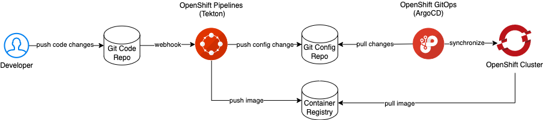

GitOps Basics
Introduction
GitOps is a set of best practices where the entire code delivery process is controlled via Git, including infrastructure and application definition as code and automation to complete updates and rollbacks.
The 4 key GitOps principles are:
-
Declarative
A system managed by GitOps must have its desired state expressed declaratively.
-
Versioned and immutable
Desired state is stored in a way that enforces immutability, versioning and retains a complete version history.
-
Pulled automatically
Software agents automatically pull the desired state declarations from the source.
-
Continiously reconciled
Software agents continuously observe actual system state and attempt to apply the desired state.
This guided exercise demonstrates these principles using Red Hat OpenShift Container Platform, OpenShift Pipelines, OpenShift GitOps, a sample application and GitHub.

Create an OpenShift Container Platform cluster
Deploy Red Hat OpenShift Kubernetes Service on IBM Cloud
Log in the cluster with cluster-admin privileges
-
Open a IBM Cloud Shell
-
Log in the cluster
export CLUSTER_NAME=<replace-with-your-cluster-name>ibmcloud oc cluster config -c ${CLUSTER_NAME} --admin
Install the operators
Copy and paste the commands below
-
GitOps
Wait until the Pods in namespacecat <<EOF | oc apply -f - apiVersion: operators.coreos.com/v1alpha1 kind: Subscription metadata: name: openshift-gitops-operator namespace: openshift-operators spec: channel: stable installPlanApproval: Automatic name: openshift-gitops-operator source: redhat-operators sourceNamespace: openshift-marketplace EOFopenshift-gitopsare runningCtrl+C quits thewatch oc get pods -n openshift-gitopswatchcommand.Example list of Pods
NAME READY STATUS RESTARTS AGE cluster-675fb59f99-dhd5z 1/1 Running 0 21m kam-5c6794574c-p49rg 1/1 Running 0 21m openshift-gitops-application-controller-0 1/1 Running 0 21m openshift-gitops-applicationset-controller-fbdc46758-nbph7 1/1 Running 0 21m openshift-gitops-dex-server-9469ff6df-gjn29 1/1 Running 0 21m openshift-gitops-redis-7867d74fb4-4sv8v 1/1 Running 0 21m openshift-gitops-repo-server-55876d7c9b-42bkb 1/1 Running 0 21m openshift-gitops-server-76c7d47754-72sj7 1/1 Running 0 21m -
Pipelines
Wait until the Pods in namespacecat <<EOF | oc apply -f - apiVersion: operators.coreos.com/v1alpha1 kind: Subscription metadata: name: openshift-pipelines-operator namespace: openshift-operators spec: channel: latest name: openshift-pipelines-operator-rh source: redhat-operators sourceNamespace: openshift-marketplace EOFopenshift-pipelinesare runningExample list of Podswatch oc get pods -n openshift-pipelinesNAME READY STATUS RESTARTS AGE tekton-operator-proxy-webhook-697fccc9cc-hpqtd 1/1 Running 0 3m1s tekton-pipelines-controller-65c59d7f5c-wjnpp 1/1 Running 0 3m21s tekton-pipelines-webhook-75fff6f875-62qn6 1/1 Running 0 3m11s tekton-triggers-controller-756594b64d-zgrrw 1/1 Running 0 2m14s tekton-triggers-core-interceptors-84bd74965b-vnpnx 1/1 Running 0 2m6s tekton-triggers-webhook-5d96785c49-4k4dh 1/1 Running 0 2m7s tkn-cli-serve-f49cc4dfc-w9hjr 1/1 Running 0 45s
Set up the project
-
Create the project
oc new-project demo -
Create the pipeline
oc apply -f https://raw.githubusercontent.com/ibm-cloud-automation/hello-pipeline/main/pipeline.yaml -
Claim storage for the pipeline
oc apply -f https://raw.githubusercontent.com/ibm-cloud-automation/hello-pipeline/main/pvc.yaml -
Create an SSH key pair
ssh-keygen -t ed25519 -N '' -f id_pipeline -
Download the key pair from the IBM Cloud Console
Click the download button
 and download
and download id_pipelineandid_pipeline.pubNote
id_pipelineis saved asid_pipeline.txt -
Add a deploy key to the
hello-configrepository- Using the Github Web UI select the
hello-configrepository - Click Settings
- On the left hand side click Deploy Keys
- Click the Add deploy key button
- Set the Title to "pipeline" and paste the contents of
id_pipeline.pubinto the Key field - Tick Allow write access and lastly click the Add key button
- Using the Github Web UI select the
-
Create a Secret that holds the private SSH key
oc create secret generic github \ --from-file=ssh-privatekey=id_pipeline \ --type=kubernetes.io/ssh-auth -
Annotate the Secret for Tekton
oc annotate secret github tekton.dev/git-0=github.com -
Link the Secret to the pipeline service account
oc secret link pipeline github -
Annotate the project for OpenShift GitOps
oc label namespace demo argocd.argoproj.io/managed-by=openshift-gitops
Verify the pipline by manually running it
-
Create the PipelineRun
oc create -f https://raw.githubusercontent.com/ibm-cloud-automation/hello-pipeline/main/pipeline-run.yaml -
Monitor the PipelineRun
tkn pr logs -f -L
Automate the PipelineRun
-
Create the Trigger and related artefacts
oc apply -f https://raw.githubusercontent.com/ibm-cloud-automation/hello-pipeline/main/trigger.yaml -
Create a Route for the EventListener
oc expose svc/el-hello-app -
Echo the input for the GitHub WebHook Payload URL
echo "$(oc get route el-hello-app --template='http://{{.spec.host}}')" -
Create a GitHub Webhook for the
hellorepository- Copy and paste the Payload URL
- Set the Content type to
application/json - Click the Add webhook button
Trigger the WebHook
-
Clone the code repository
git clone git@github.com:ibm-cloud-automation/hello.git -
Start the SSH agent and add the pipeline key
eval $(ssh-agent -s)ssh-add -k id_pipeline -
Commit and push a change
git commit --allow-empty -m "Trigger PipelineRun"git push -
Monitor the PipelineRun
tkn pr logs -f -L
Create the ArgoCD application
-
Create the Application
1. Get the ArgoCD admin passwordcat <<EOF | oc apply -f - apiVersion: argoproj.io/v1alpha1 kind: Application metadata: name: hello namespace: openshift-gitops spec: destination: name: '' namespace: demo server: 'https://kubernetes.default.svc' source: path: base repoURL: 'https://github.com/ibm-cloud-automation/hello-config' targetRevision: HEAD project: default EOFoc -n openshift-gitops extract secret/openshift-gitops-cluster --to=- --keys=admin.password -
Get the ArgoCD URL
echo "$(oc get route/openshift-gitops-server -n openshift-gitops --template='https://{{.spec.host}}')" -
Open a browser tab and paste the ArgoCD URL, login as user admin
-
Click the SYNC button followed by the SYNCHRONIZE button (leave all fields to their default values)
-
Check the application Pod
oc get pod -l app=hello
A Route is missing for the application, let's add one, the GitOps way
Add a Route for the application
-
Generate the host input for the Route
oc get ingresses.config/cluster --template='hello.{{.spec.domain}}{{"\n"}}' -
Navigate to the
hello-configrepository on GitHub -
Type . (a dot) to start the Web Editor
-
Expand the base folder and click New file, name the file
route.yaml -
Copy and paste the yaml below into the file
apiVersion: route.openshift.io/v1
kind: Route
metadata:
labels:
app: hello
name: hello
spec:
host:
port:
targetPort: 1970
to:
kind: Service
name: hello
weight: 100
wildcardPolicy: None
-
Append the output from step 1 after
host: -
Save and close
-
Update
kustomization.yamlso it includesroute.yaml -
Commit the changes
-
Switch to the ArgoCD UI and sync the application
Test the Route
-
Get the application URL
oc get route/hello --template='http://{{.spec.host}}' -
Open the application URL in a browser tab
The message "Hello universe" is displayed.